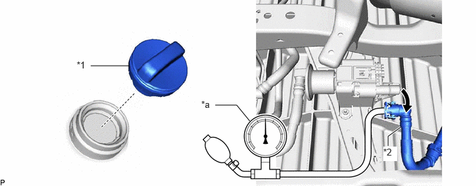

| Last Modified: 10-07-2025 | 6.11:8.1.0 | Doc ID: RM100000002GHXD |
| Model Year Start: 2024 | Model: Tacoma | Prod Date Range: [12/2023 - 03/2024] |
| Title: T24A-FTS (EMISSION CONTROL): EMISSION CONTROL SYSTEM: ON-VEHICLE INSPECTION; 2024 MY Tacoma Tacoma HV [12/2023 - 03/2024] | ||
ON-VEHICLE INSPECTION
CAUTION / NOTICE / HINT
CAUTION:
To prevent injury due to contact with an operating fan and generator V belt or cooling fan, keep your hands and clothing away from the fan and generator V belt and cooling fans when working in the engine compartment with the engine running or the ignition switch ON.

PROCEDURE
PROCEDURE
1. VISUALLY CHECK HOSES, CONNECTIONS AND GASKETS
(a) Visually check that the hoses, connections and gaskets have no cracks, leaks or damage.
NOTICE:
- Detachment or other problems with the engine oil level dipstick, oil filler cap assembly, ventilation hose or other components may cause the engine to run improperly.
- Air suction caused by disconnections, looseness or cracks in any part of the air induction system between the throttle body with motor assembly and cylinder head sub-assembly will cause engine failure or engine malfunctions.
If any defects are found, replace parts as necessary.
2. INSPECT EVAPORATIVE EMISSION CONTROL SYSTEM
CAUTION:
To prevent injury due to contact with an operating fan and generator V belt or cooling fan, keep your hands and clothing away from the fan and generator V belt and cooling fans when working in the engine compartment with the engine running or the ignition switch ON.
Pre-procedure1
(a) Warm up the engine.
(b) Turn the ignition switch off.
(c) Connect the GTS to the DLC3.
(d) Slide the clip and disconnect the No. 2 fuel vapor feed hose from the purge valve (No. 1 vacuum switching valve assembly).
HINT:
Click here
![2024 - 2026 MY Tacoma [12/2023 - ]; T24A-FTS (ENGINE MECHANICAL): ENGINE ASSEMBLY (for Gasoline Model): REMOVAL+](../../../../stylegraphics/info.gif)
(e) Start the engine.
(f) Turn the GTS on.
Procedure1
(g) Enter the following menus: Powertrain / Engine / Active Test / Activate the EVAP Purge VSV
Powertrain > Engine > Active Test
|
Tester Display |
|---|
|
Activate the EVAP Purge VSV |
(h) Check that vacuum occurs at the purge valve (No. 1 vacuum switching valve assembly) port.
If vacuum does not occur, check the following items.
- Purge valve (No. 1 vacuum switching valve assembly)
- Clogging in the No. 2 fuel vapor feed hose that connects the intake manifold and purge valve (No. 1 vacuum switching valve assembly)
- Voltage from the ECM PRG terminal
HINT:
Click here
(i) Exit Active Test mode.
If the result is not as specified, replace the purge valve (No. 1 vacuum switching valve assembly), wire harness or ECM.
Post-procedure1
(j) Connect the No. 2 fuel vapor feed hose to the purge valve (No. 1 vacuum switching valve assembly) and slide the hose clip to secure it.
HINT:
Click here
Pre-procedure2
(k) Warm up the engine and drive the vehicle.
Procedure2
(l) Enter the following menus: Powertrain / Engine / Data List / EVAP (Purge) VSV.
Powertrain > Engine > Data List
|
Tester Display |
|---|
|
EVAP (Purge) VSV |
(m) Confirm that the purge valve (No. 1 vacuum switching valve assembly) opens.
If the result is not as specified, replace the purge valve (No. 1 vacuum switching valve assembly), wire harness or ECM.
Post-procedure2
(n) None
3. CHECK FUEL TANK AND VENT LINE
Pre-procedure1
(a) Disconnect the fuel tank breather tube from the canister (charcoal canister assembly).
|
*1 |
Fuel Tank Cap Assembly |
*2 |
Fuel Tank Breather Tube |
|
*a |
Pressure Gauge |
- |
- |
(b) Connect a pressure gauge to the fuel tank breather tube.
(c) Apply 4 kPa (0.04 kgf/cm2, 0.6 psi) of pressure to the vent line of the fuel tank assembly.
HINT:
Perform this inspection with the fuel tank assembly less than 90% full. When the fuel tank assembly is full, the fuel fill check valve closes and the pressure is released through the 2 mm (0.0787 in.) orifice. As a result, when the fuel tank cap assembly is removed, the pressure does not decrease smoothly.
Procedure1
(d) Check that the fuel tank assembly pressure is maintained for some time and does not decrease immediately.
HINT:
If the pressure decreases immediately, one of the following may apply:
- The fuel tank cap assembly is not completely tightened.
- The fuel tank cap assembly is damaged.
- Air is leaking from the vent line.
- The fuel tank assembly is damaged.
(e) Remove the fuel tank cap assembly and check that the pressure is released smoothly.
If the pressure is not released smoothly, replace the fuel tank assembly.
Post-procedure1
(f) Reconnect the fuel tank breather tube to the canister (charcoal canister assembly).
4. INSPECT COMPRESSOR INLET ELBOW SUB-ASSEMBLY
(a) Visual inspection.
|
(1) Check that the vacuum hose, No. 1 fuel vapor connector, No. 2 air hose, No. 2 fuel vapor feed hose and No. 3 fuel vapor feed hose has no cracks, leaks or damage. If any defect is found, replace the hose or connector with a new one. |
|
(b) Check the operation.
(1) Remove the No. 2 air cleaner inlet.
HINT:
Click here
|
(2) Check that suction occurs at the No. 2 fuel vapor feed hose when applying compressed air into the No. 2 air hose. If any defect is found, replace the No. 2 compressor inlet elbow sub-assembly with a new one. |
|
(3) Install the No. 2 air cleaner inlet.
HINT:
Click here
5. INSPECT AIR LINE
Pre-procedure1
|
(a) Disconnect the fuel tank breather tube from the leak detection pump sub-assembly. |
|
Procedure1
(b) Check that air flows freely into the air line.
If air does not flow freely into the air line, repair or replace the fuel tank breather tube.
Post-procedure1
(c) Connect the fuel tank breather tube to the leak detection pump sub-assembly.